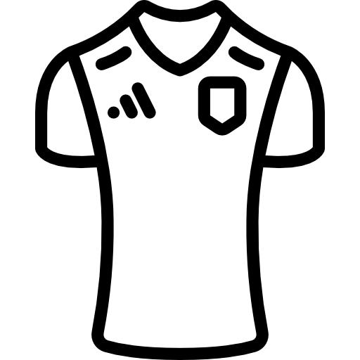

DESCARGAR
Deja que te cuente compañero así la historia, del equipo que me vio nacer.
donde yo aprendí a golpear una pelota, como hay que atacar o defender,
sacarle partido a la derrota y la victoria, cosas que en la vida hay que saber,
recuerdos que siempre quedarán en mi memoria, vamos compañeros ¡a vencer!
Tus colores de sol y de mar, en el alma los voy a llevar,
por siempre y a morir Marismas del polvorín
Lo lo lo …
…por siempre y a morir Marismas del Polvorín.
CADETES 2023-2024
equipo actual de pablo durán y juanma actualmente este equipo milita en la tercera categoria del futbol andaluz se encuentra en el 6º lugar de la categoría.

EQUIPACIONES 2023-2024
